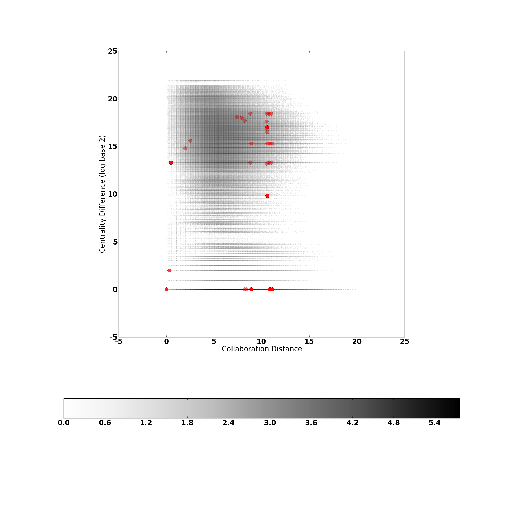
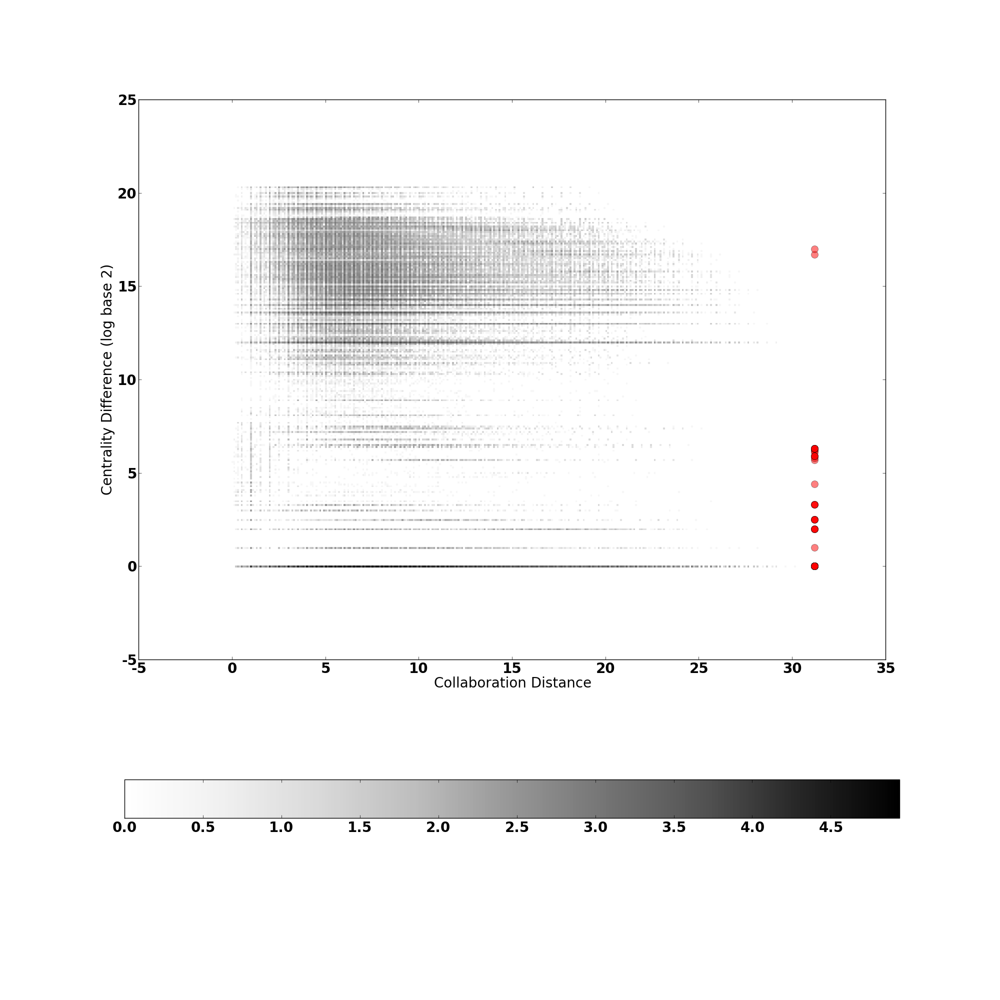
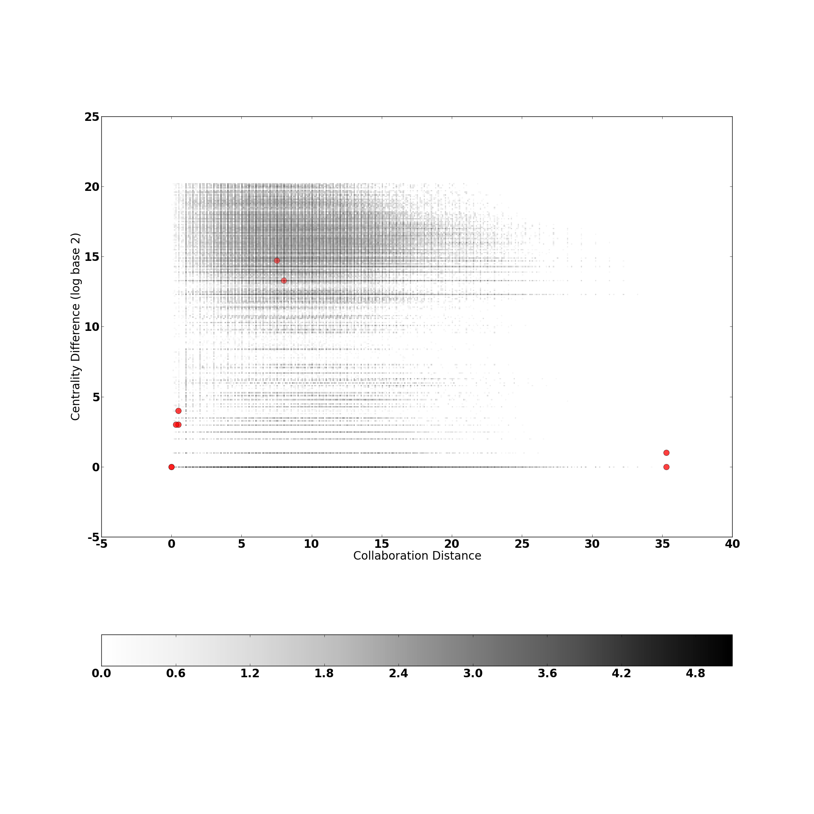
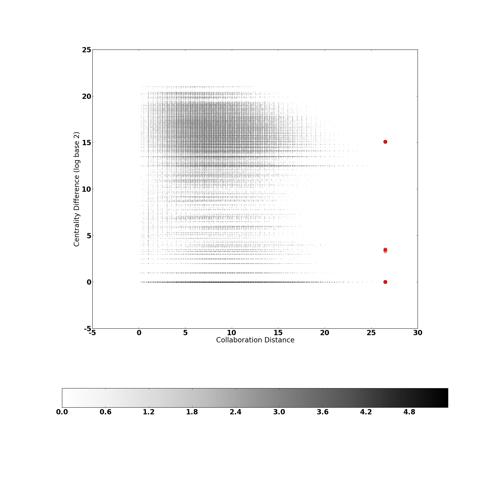

Collaboration Network in Physics

Figure 1. Distribution of Collaborations and Comments in Physics Academic Network between 2008 and 2009 (edges weighted by number of collaborations)
X: Collaboration Distance, Y: Centrality Difference (Log base 2), Dots: Comments

Figure 2. Distribution of Collaborations and Comments in Physics Academic Network in 2008
X: Collaboration Distance, Y: Centrality Difference (Log base 2), Dots: Comments

Figure 3. Distribution of Collaborations and Comments in Physics Academic Network in 2009
X: Collaboration Distance, Y: Centrality Difference (Log base 2), Dots: Comments

Figure 4. Distribution of Collaborations and Comments in Physics Academic Network in 2010
X: Collaboration Distance, Y: Centrality Difference (Log base 2), Dots: Comments